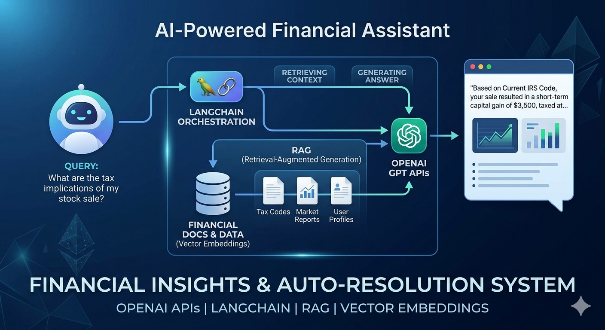
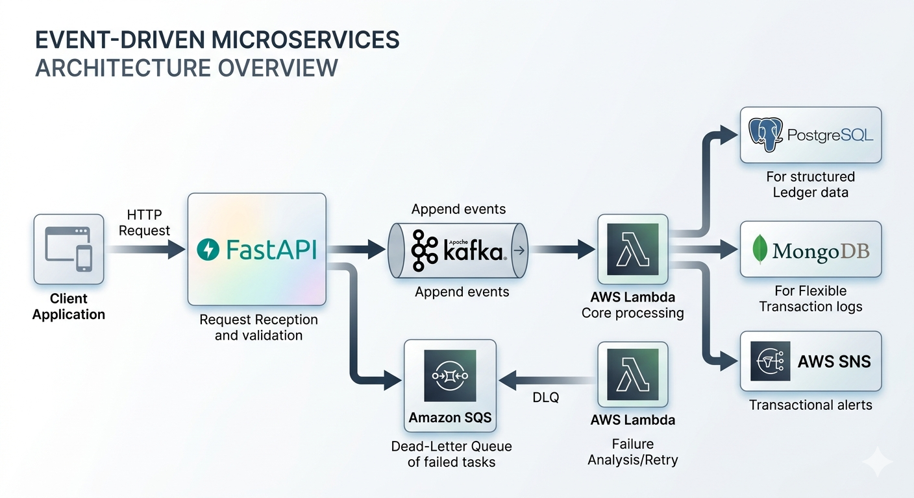
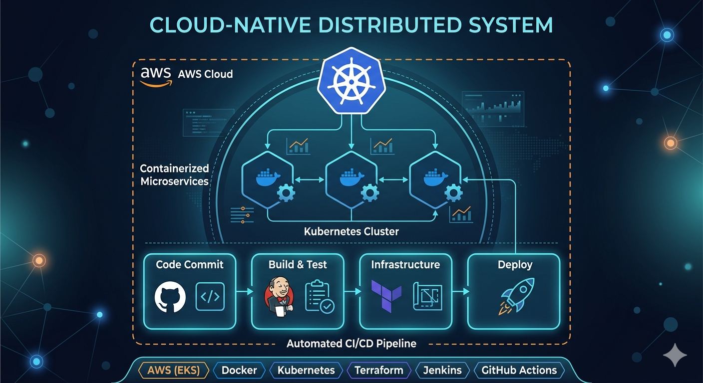
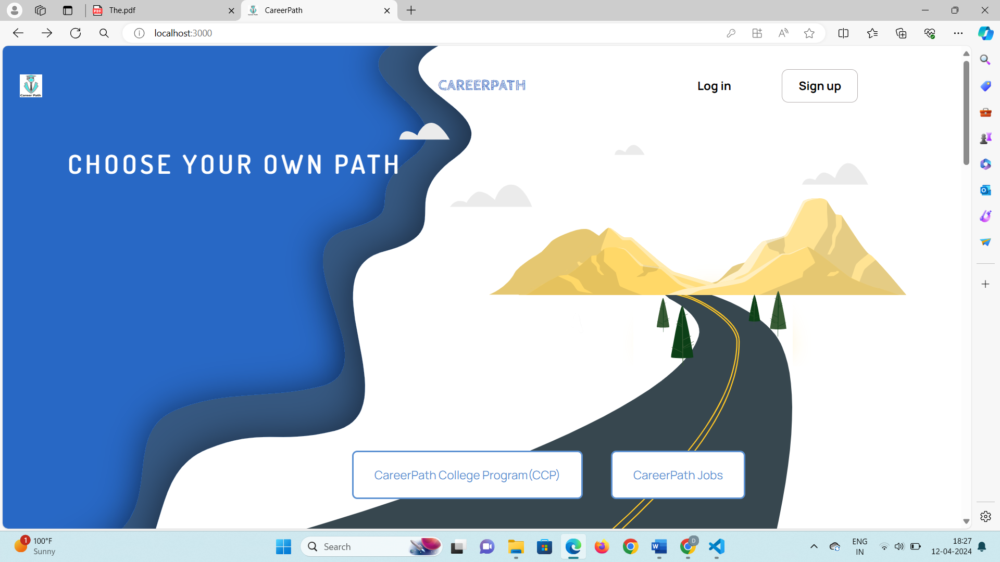
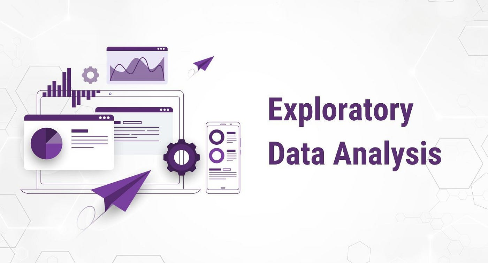
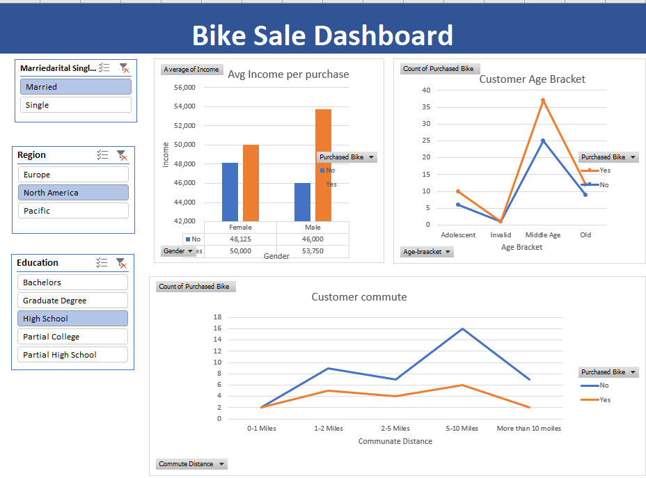

My Eduacation
Master of Science in Computer Science
University of Illinois-Springfield,IL,USA
GPA: 3.96/4, Graduation Year: 2026
Focus Areas: Software Engineering, Machine Learning, Data Analysis, Data Visulization
Bachelor of Technology in Information Technology
Aditya Silver Oak Institute of Technology,Gujarat, India
GPA: 3.78/4, Graduation Year: 2024
Focus Areas: Web Development, Software Development, Algorithms and Computations
Job experience
Software Engineer
Company:Intuit, USA
Duration: Jan 2026 – Present
Key Responsibilities: Built cloud-native financial microservices using Python, FastAPI, Kafka, PostgreSQL, Redis, Docker, Kubernetes, and AWS - Designed event-driven architecture using Kafka, AWS Lambda, SQS, and EventBridge for financial transaction processing - Developed AI-powered financial assistants using OpenAI APIs, LangChain, LangGraph, and RAG pipelines - Built secure REST APIs with OAuth 2.0, JWT, and API Gateway for enterprise-grade authentication systems - Improved observability using CloudWatch, Prometheus, Grafana, and OpenTelemetry, reducing MTTR by 40%
Software Developer
Company:CodeNest Solutions, India
Duration: Jan 2022 – Jul 2024
Key Responsibilities: Developed enterprise applications using Java, Spring Boot, React.js, MySQL, and REST APIs - Built microservices with Spring Cloud, Kafka, Redis, and Docker to improve system scalability - Designed responsive frontend modules using React.js, Redux, HTML5, CSS3 - Developed high-performance backend utilities using C++ and multithreading - Improved system reliability by 28% through debugging, optimization, and testing (JUnit, Mockito)
Technical Skills
Programming Languages:
Java, Python, C++, JavaScript, SQL
Backend Development:
FastAPI, Spring Boot, Spring Cloud, Microservices, REST APIs,
Apache Kafka, Distributed Systems, OAuth 2.0, JWT
Frontend Development:
React.js, HTML5, CSS3
AI & Generative AI:
Large Language Models (LLMs), OpenAI APIs, LangChain, LangGraph,
RAG, Prompt Engineering
Cloud & DevOps:
AWS, Docker, Kubernetes, Terraform, Jenkins, GitHub Actions, CI/CD
Databases:
PostgreSQL, MySQL, Redis
Software Engineering:
Data Structures & Algorithms, OOP, System Design,
Multithreading, Agile, Git
My Projects
AI-Powered Financial Assistant (RAG System)
{kind=link}

Built an intelligent assistant using OpenAI APIs, LangChain, and Retrieval-Augmented Generation (RAG) to provide contextual financial insights and automate query resolution using vector embeddings.
Event-Driven Microservices Platform
{kind=link}

Designed scalable microservices architecture using FastAPI, Kafka, AWS Lambda, and SQS to handle real-time financial transactions and event processing.
Cloud-Native Distributed System
{kind=link}

Deployed containerized microservices on AWS using Docker, Kubernetes, and Terraform with CI/CD pipelines using Jenkins and GitHub Actions.
Career Pathway Website
{kind=link}

Developed a fully functional personal website for career exploration and guidance. The project showcases interactive web pages with structured navigation and clean design, demonstrating frontend development skills and attention to user experience.
Address
114 Westgate Ln
Hannibal, MO, 63401
Phone
(573) 413-0345
Social
- © Untitled
- Design: HTML5 UP
Kuntal Dobariya
Detail-oriented and enthusiastic Computer Science graduate student with strong proficiency in Python, Java, and Data Analytics, and hands-on experience in building full-stack web applications. Experienced in modern MySQL, Power BI, Tableau, MS Excel, JavaScript, React, RESTful APIs, R Programming, and AI integration. LinkedIn.
My Eduacation
Bachelor of Technology in Information Technology
Aditya Silver Oak Institute of Technology,Gujarat, India
GPA: 3.78/4, Graduation Year: 2024
Focus Areas: Web Development, Software Development, Algorithms and Computations
Skills: Pyhton, Java, React.Js, HTML, CSS, JavaScript, Django
Master of Science in Computer Science
University of Illinois-Springfield,IL,USA
GPA: 3.96/4, Graduation Year: 2026
Focus Areas: Machine Learning, Data Analysis, Software Engineering, Data Visulization
Skills: R Programming, MySQL, MS Excel, PowerBI, Tabluea
Job experience
Frontend Developer Intern
Company:Compatible Solutions, Gujarat, India
Duration: Jan 2024 – Apr 2024
Key Responsibilities: Worked on Career Pathway, a website designed to assist students and job seekers in career exploration. I contributed to developing and optimizing key features for Career Pathway, focusing on improving user experience and enhancing performance. Collaborated with the back-end team to integrate API services and streamline data handling.
Web Developer Intern (Django-python)
Company: BrainyBeam, Gujarat, India
Duration: January 2023 – Feb 2023
Key Responsibilities: Acquired proficiency in Python programming language and Django framework fundamentals. Developed and maintained a website development project, enhancing its functionality and performance. Designed RESTful APIs for seamless communication between front-end and back-end systems.
IT Engineering Intern (Django-python)
Company: Srashtasoft, Gujarat, India
Duration: Jun 2022 – Jul 2022
Key Responsibilities: Worked on E-learning website, developing interactive learning modules and integrating multimedia resources. Gained hands-on experience in the Django framework and REST API integration. Received mentorship from experienced developers, enhancing problem-solving abilities and understanding of software development best practices.
Data Cleaning
in SQL
{kind=link}
Cleaned and prepared raw datasets using SQL to improve data quality and consistency. Removed duplicate records and handled missing values. Transformed unstructured data into a clean, structured format suitable for accurate analysis and reporting.
Exploratory Data
analysis in SQL
{kind=link}

Executed exploratory data analysis in SQL by applying joins, groupings, aggregations, and filtering queries. Analyzed key variables to uncover trends, distributions, and relationships within the dataset.
Excel Bike Sale
Dashboard
{kind=link}

Built an interactive dashboard in Excel to analyze key metrics across multiple datasets. Used pivot tables, charts, and slicers to present insights and trends across four data sheets.
PowerBI Dashboard
{kind=link}
Built an interactive Power BI dashboard to visualize key metrics and trends. Cleaned and transformed raw data, created data models, and designed charts and KPI visuals for clear analysis. Implemented filters and slicers to enable interactive exploration and support data-driven decision-making.
Data visulization
in PowerBI
{kind=link}
Data visualization in Power BI involves transforming raw data into interactive charts, graphs, and dashboards to make insights easier to understand. It includes creating visuals such as bar charts, line graphs.
Career Pathway
Website
Developed a fully functional personal website for career exploration and guidance. The project showcases interactive web pages with structured navigation and clean design, demonstrating frontend development skills and attention to user experience.
Website Link Source CodeAddress
1803 Seven Pines Rd
Springfield,IL,62704
Phone
(573) 413-0345
Social
- © Untitled
- Design: HTML5 UP